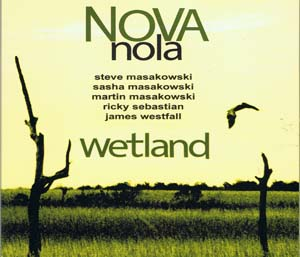
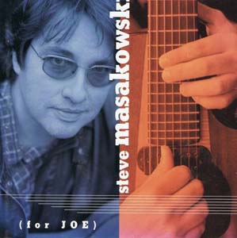
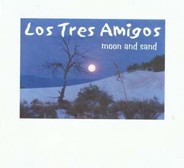
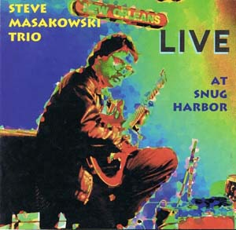
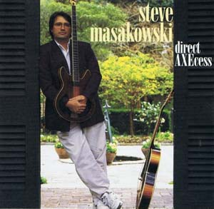
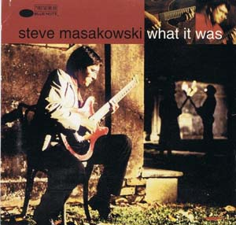
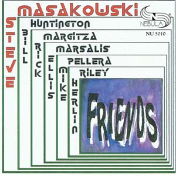
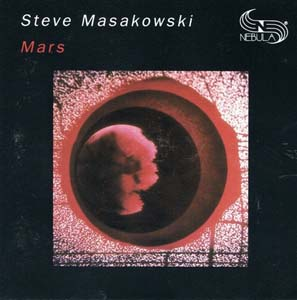

|
"Things I Like" 2013
Steve Masakowski- 7 String Guitar
Rex Gregory- Alto Saxophone (tracks 1-2, 4-6)
Peter Harris- Bass (except on track 10)
Julian Garcia- Drums (except on track 10)
offbeat review, May 2013
|
|  |
Nova Nola "Wetland" 2009
Steve Masakowski- 7 String Guitar/Guitar Synthesizer
Sasha Masakowski- Vocals
Martin Masakowski- Bass
James Westfall- Vibraphone
Ricky Sebastian- Drums
Ulrike Masakowski- Piano (track 11)
offbeat review, April 2010
|
|  |
"For Joe" 2000
Steve Masakowski- 7 String Guitar
Bill Huntington- Bass
Johnny Vidacovich- Drums
allmusic review, December 2004
|
|  |
Los Tres Amigos "Moon and Sand" 2002
Steve Masakowski- 7 String Guitar
James Singleton- Bass
Hector Gallardo- Bongos
|
|  |
"Live at Snug Harbor" 1998
Steve Masakowski- 7 String Guitar
Earl Turbinton- Alto Saxophone (track 5)
Bill Huntington- Bass
Jason Marsalis- Drums (tracks 1-2, 5-7)
Johnny Vidacovich- Drums (tracks 3-8, 8)
allaboutjazz review, September 1998
|
|  |
"Direct AXEcess" 1995 (Blue Note Records)
Steve Masakowski- 7 String Guitar
david torkanowsky- Piano
Bill Huntington- Bass (tracks 3, 8-12)
James Singleton- Bass (tracks 1-2, 5-6)
Brian Blade- Drums (tracks 1-3, 5-6, 8-12)
Hank Mackie- Guitar (tracks 3, 13)
|
|  |
"What It Was" 1993 (Blue Note Records)
Steve Masakowski- 7 String Guitar
Rick Margitza- Tenor Saxophone (tracks 4-5, 9)
Michael Pellera- Piano/Keyboards
Larry Sieberth- Keyboards (tracks 5-6)
David Torkanowsky- Keyboards (tracks 1-3, 7-8, 11)
James Genus- Electric Bass (tracks 1-2, 5-6, 8-9, 11)
Bill Huntington- Acoustic Bass (tracks 3, 7)
James Singleton- Acoustic Bass (tracks 4, 10)
Ricky Sebastian- Drums (tracks 1-2, 4-6, 8-9, 11)
Johnny Vidacovich- Drums (tracks 3, 7)
Don Alias- Percussion (tracks 1-2, 4-6, 8-9)
Hector Gallardo- Bongos (tracks 2, 4, 10)
|
|  |
"Friends" 1991
Steve Masakowski- 7 String Guitar
Rick Margitza- Tenor Saxophone
Ellis Marsalis- Piano (tracks 1-2, 4-7)
Mike Pellera- Piano (tracks 3, 8)
Bill Huntington- Bass
Herlin Riley- Drums
|
|  |
"Mars" 1983
Steve Masakowski- 7 String Guitar, Arp 2600 Synth, Moog Opus III
Dave Liebman- Soprano Saxophone (tracks 2-3, 8-9)
Kent Jordan- Flute (track 6)
Patrice Fisher- Harp (track 1)
David Torkanowsky- Piano, Electric Piano
Larry Sieberth- Arp 2600, Mini Moog, Moog Opus III, Electic Piano
James Singleton- Acoustic & Electric Bass
James Black- Drums (track 4)
Ricky Sebastian- Drums (tracks 2, 6)
Johnny Vidacovich- Drums (tracks 3, 8-9)
Mark Sanders- Percussion (track 6)
|